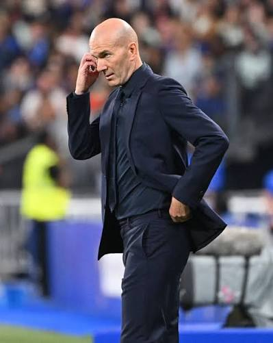

Zinédine Zidane, surnommé « Zizou », est né le 23 juin 1972 à Marseille. Il a joué au poste de milieu offensif de 1989 à 2006, avant de devenir entraîneur. Considéré comme l'un des plus grands joueurs de l'histoire du football, il est le sélectionneur de l’équipe de France depuis le 1er août 2026.
Zinédine Zidane

Pourquoi Zinédine Zidane est-il aussi une icône de mode ?
Source : Marie Claire
Lire l’article sur Marie ClaireZinédine Zidane, nouveau sélectionneur des Bleus
Source : Fédération française de football
Lire l’article sur le site de la FFFGalerie photos

